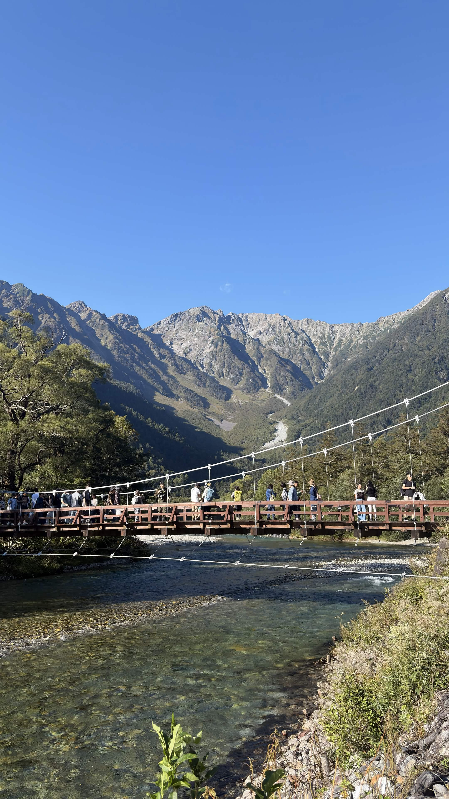
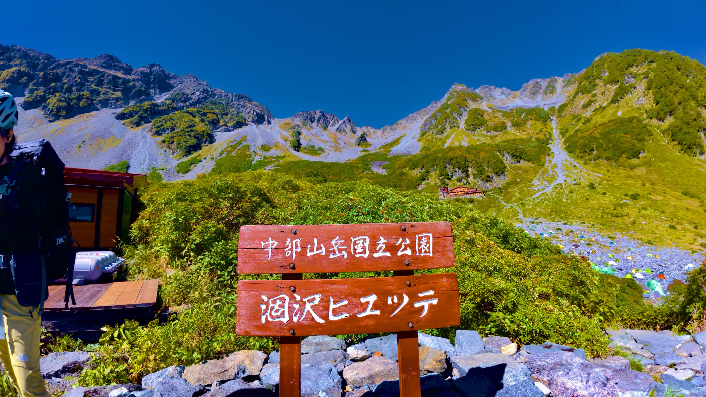
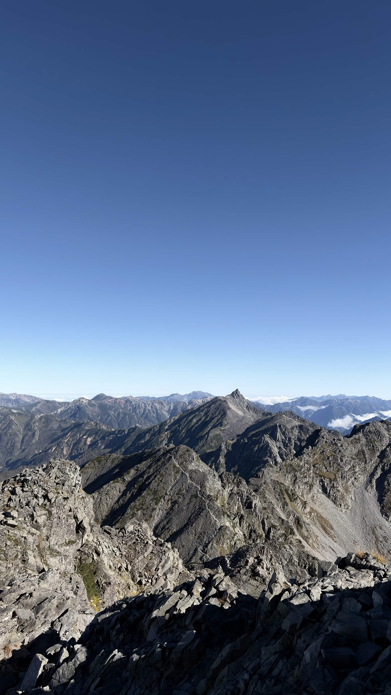

| 日程 | 2026年9月21日〜9月22日 |
|---|---|
| メンバー | ソロ（なし） |
| 難易度（俺流10段階） | 技術力 5 / 体力度 6 |
| アクセスコース目安 |
・上高地 → 横尾大橋：約2時間分 ・横尾大橋 → 涸沢カール：約2時間30分 ・涸沢カール → 涸沢岳：約2時間30分 ・涸沢岳 → 奥穂高岳：約1時間30分 |

初めての上高地から向かう穂高連峰へのチャレンジ。圧倒的なスケールと岩場の恐怖を感じる登山となりました。

今回はかなりいいペースで向い、しっかりと登ることができました。このまま冬季奥穂高岳の攻略ができるように調整を少しずつしていきたいと思います。
← HOMEへ戻る